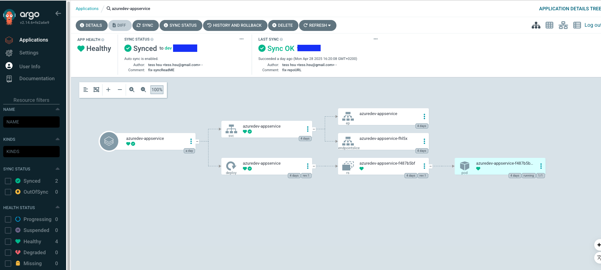

Un voyage concis en DevOps : GitOps sur Azure avec ArgoCD
29 Avril 2025

🚀 J’ai récemment terminé un projet pratique DevOps utilisant Azure, ArgoCD et GitOps pour déployer une application Node.js sur un cluster AKS. Voici mon parcours !
Aperçu du projet
Mon objectif était de déployer une application Node.js sur Azure Kubernetes Service (AKS), de la gérer avec ArgoCD en utilisant GitOps, et d’automatiser les déploiements via GitHub Actions. L’application a été conteneurisée, stockée dans Azure Container Registry (ACR), et déployée avec un chart Helm.
Étape 1 : Configuration
J’ai créé un cluster AKS (`AiliDevAKS`) et un ACR (`ailidevacr`), mis en place un dépôt GitHub public (`tesshsu/AzureDev-AppService`), et installé ArgoCD sur AKS.
Étape 2 : Configuration d’ArgoCD
J’ai utilisé le modèle App-of-Apps, définissant `root-app` et `azuredev-appservice` dans mes manifestes (voir : app-of-apps.yaml). Je l’ai appliqué manuellement pour tester.
Défi 1 : Placeholder dans `repoURL`
Le `repoURL` affichait un placeholder (`https://github.com/${{ github.repository }}.git`) car j’ai appliqué le fichier manuellement. Je l’ai remplacé par `https://github.com/tesshsu/AzureDev-AppService.git`, installé le CLI ArgoCD, et réappliqué le fichier après avoir supprimé les Applications.
Défi 2 : Problème d’accès au dépôt
Une erreur `ComparisonError` est apparue ("échec de la liste des refs : authentification requise") car j’avais temporairement rendu le dépôt privé. Je l’ai rendu public à nouveau, actualisé dans ArgoCD, et l’erreur a disparu.
Vérification
L’application était `Healthy` et `Synced`, accessible à `132.220.10.28`. J’ai corrigé un décalage de réplicas en mettant `replicaCount` à `3` dans le chart Helm.
GitOps en action
- J’ai mis à jour l’application avec "Hello from GitOps v13 !" et ArgoCD a synchronisé.
- J’ai testé l’auto-réparation en supprimant un Pod—ArgoCD l’a recréé.
- J’ai effectué un rollback vers un commit précédent via l’interface ArgoCD.
Leçons apprises
- GitOps avec ArgoCD est puissant pour l’automatisation.
- Assurez un accès constant au dépôt—les dépôts privés nécessitent des identifiants.
- L’interface et le CLI d’ArgoCD sont parfaits pour le dépannage.
Mon projet est une réussite ! J’ai acquis une base solide en GitOps et j’ai hâte de relever d’autres défis DevOps. Partagez vos expériences GitOps ci-dessous !
Hashtags :
#Azure
#ArgoCD
#GitOps
#DevOps
#CloudComputing
Partagez cet article :